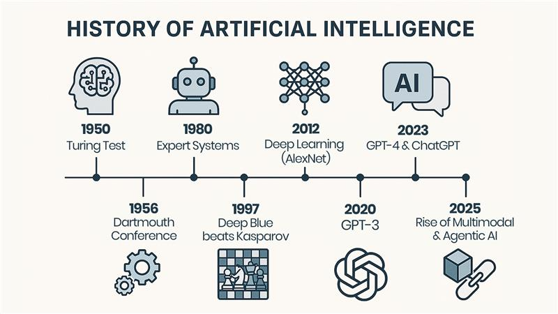
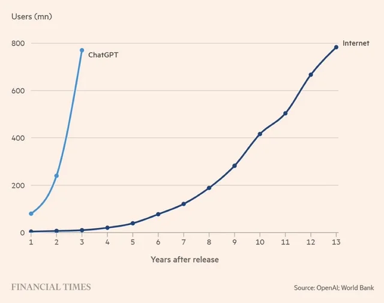
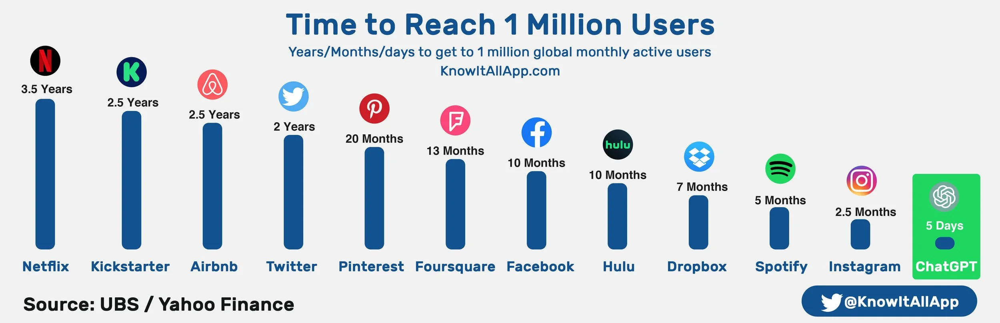
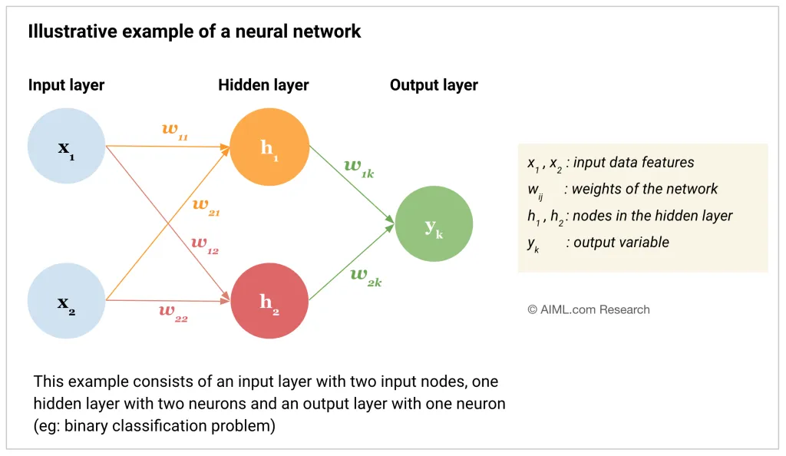
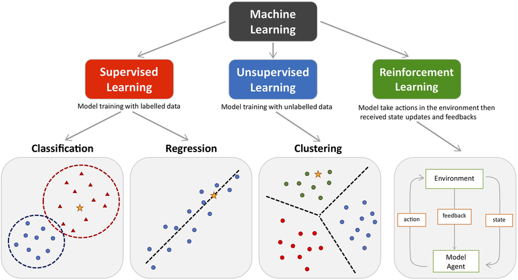

From Prompt to Production: The AI Developer's Rapid Workflow
An interactive handbook for BS Computer Science students, prepared by Mr. Haseeb.
About the Mentor
Mr. Haseeb
COO at Alrighttech, Full Stack Agentic AI Engineer
The "Prompt to Production" Pipeline
1. Foundations
Understand (GenAI, Agents)
2. Prompting
Define & Instruct (6-Step)
3. Workflow
Build & Deploy (Cursor, Git)
4. Production
Live Application (Vercel)
1. AI Foundations and Evolution
This section bridges fundamental CS principles with the cutting-edge concepts driving modern AI, emphasizing the shift from classical systems to autonomous agents.
1.1 What is AI? The Four Schools of Thought
Thinking Humanly
Modeling human cognition (cognitive science).
Acting Humanly
Passing the Turing Test (mimicking human behavior).
Thinking Rationally
Using formal logic and inference (logic-based AI).
Acting Rationally
Achieving the best outcome (rational agents).
1.2 The Evolution of Intelligence: A Timeline
The field of AI has seen three major waves of progress:
Classical/Symbolic AI (1950s–1980s)
Based on hard-coded rules and logic.
Systems were excellent at tasks like chess (Deep Blue) but brittle and unable to handle noise or uncertainty.
Key Concept:
Expert Systems (e.g., MYCIN)
Machine Learning (1990s–2010s)
Shifted to statistical models that learned from data.
Introduction of algorithms like Support Vector Machines (SVMs) and Random Forests.
Key Concept:
Feature Engineering (humans manually defined input features)
Deep Learning (2010s–Present)
Uses Deep Neural Networks (DNNs) with many hidden layers.
Automatically extracts features from raw data (e.g., pixels, raw text).
Key Concept:
Transformer Architecture (the foundation for LLMs)

⚡ Key Historical Events & Fascinating Facts
Deep Blue vs. Kasparov (1997)
IBM's supercomputer Deep Blue defeated world chess champion Garry Kasparov in a 6-game match. This landmark event proved that computers could outperform humans in complex strategic games through brute force computation and search algorithms.
ChatGPT's Explosive Growth (2022)
100 million users in just 2 months! To put this in perspective: It took the Internet 7 years to reach 50 million users, and Netflix 10 years. ChatGPT achieved this milestone faster than any consumer application in history, signaling the mainstream adoption of AI.


🎯 The Progression of AI Capabilities
1. Detection (2010s)
Early AI could barely distinguish between a cat and a dog in images. Basic pattern recognition.
2. Classification (Mid-2010s)
AI evolved to categorize images into thousands of classes, enabling practical image search and object detection.
3. Prediction (Late-2010s)
Machine learning models became excellent at forecasting: stock prices, weather, customer behavior, and more.
4. Generation (2020–Present)
AI now creates: text (GPT), images (DALL-E, Midjourney), code, music, and video. Fully original, high-quality content.
5. Agents (2024–Present)
AI agents with autonomy: planning, reasoning, and executing multi-step tasks with tools. The future of autonomous software development.
1.3 The Current Frontier (2025)
Generative AI (GenAI) & LLM Platforms
The ability of models to create new content (code, text, images). Powered by the Transformer Architecture. This model uses a Self-Attention mechanism to weigh the importance of different words in the input sequence, allowing it to understand deep context and generate coherent, creative text by predicting the next most likely token.
The top platforms include:
Agentic AI (e.g., Manua/Veo 3 Concepts)
Moving beyond chatbots, Agentic AI systems are capable of autonomous planning, reasoning, and execution of multi-step tasks with minimal human input. The concepts behind advanced models like Manua and Veo 3 exemplify this next generation of planning and execution.
The Agent Loop (P-R-A):
Developer Impact: This enables automated QA, bug fixing, and complex workflow orchestration using frameworks like LangChain and CrewAI.
🧠 How Machines Learn: Neural Networks & LLMs
Basics of Neural Networks
Neural networks are computing systems made of interconnected nodes (like neurons) organized in layers: Input → Hidden → Output
Key Concept: Each connection has a weight that gets adjusted during training. The network learns by minimizing errors through a process called backpropagation.

Types of Machine Learning
Machine learning encompasses three main paradigms, each with different approaches to learning from data.

How LLMs Learn Text Patterns
1. Training Phase
LLMs are trained on vast amounts of text (trillions of words from books, articles, code). They learn to predict the next word in a sequence.
2. Attention Mechanism
The Transformer architecture's "self-attention" allows the model to focus on relevant words in the context, understanding relationships between words.
3. Pattern Recognition
After billions of examples, the model recognizes patterns: grammar, facts, code syntax, reasoning chains, and even creative writing styles.
4. Generation
When you prompt an LLM, it uses these learned patterns to generate coherent, contextually relevant text, code, or solutions.
📍 Where We Are Now: The GPT Era (2023-Present)

🚀 Major Breakthroughs
- • ChatGPT Release (Nov 2022): First consumer-friendly LLM with 100M users in 2 months
- • GPT-4 (Mar 2023): Multimodal capabilities (text, images, code) with improved reasoning
- • Claude, Gemini (2023-2024): Competitive LLMs challenging GPT dominance
- • Agentic AI (2024): Autonomous agents using tools, planning, and multi-step execution
🎯 Current AI Capabilities
Writing, analysis, translation
Generation, debugging, docs
Art, design, photorealistic
Generation, editing, Sora
🔮 The Future: Robotics & Autonomous Agents
The convergence of AI models with physical systems is enabling:
2. The AI-Powered Developer Stack & Prompt Engineering
As computer scientists, your role is to integrate and guide these tools. The essential skill is Prompt Engineering.
2.1 The Modern AI Tools Ecosystem
Understanding the landscape of AI tools available for Computer Science students and professionals.
Text (LLMs)
GPT-4o, Gemini Advanced, Claude 3
Core Function for CS:
Research synthesis, generating documentation, ideation, designing API specifications
Coding
Cursor, GitHub Copilot, Gemini Code Assist
Core Function for CS:
Code generation, automated debugging, large-scale refactoring, writing unit tests
Agents/Orchestration
AutoGen, CrewAI
Core Function for CS:
Building self-executing workflows (e.g., a documentation agent that researches, writes, and formats)
Images
Midjourney, DALL-E, Stable Diffusion
Core Function for CS:
Creating placeholder art, generating UI mockups, creating synthetic data for computer vision training
Video
Runway, Pika, Sora
Core Function for CS:
Generating video content, demonstrations, synthetic data, product marketing materials
Voice
ElevenLabs, Murf, Speechify
Core Function for CS:
Speech-to-text, text-to-speech, voice cloning, voice assistants, accessibility features
2.2 Key Prompting Paradigms
Different approaches to structuring prompts for optimal results with LLMs.
Zero-Shot Prompting
Description: Providing no examples. The model uses its general knowledge.
Use Case: Simple summarization or factual questions.
Few-Shot Prompting
Description: Providing a few examples of desired input/output pairs before the main task.
Use Case: Guiding the model to a very specific output format (e.g., JSON or specific class structure).
Role-Based Prompting
Description: Assigning a persona to the model.
Use Case: "Act as a Senior DevOps Engineer" to get infrastructure recommendations.
Contextual Prompting
Description: Providing specific documents or code snippets the model must reference.
Use Case: Debugging a function by pasting the code and asking "Why is this crashing?".
Temperature & Creativity Control
Description: Adjusting randomness/creativity of responses (0.0 = deterministic, 1.0 = very creative).
Use Case: Low temp (0.2) for code generation, high temp (0.8) for creative writing.
Reactive Prompting (Iterative Refinement)
Description: Starting with basic prompt, then refining based on output in follow-up messages.
Use Case: Build complex solutions step-by-step through conversation and feedback loops.
2.3 The 6-Step Prompting Framework (S-T-C-C-F-E)
The Power of Precision: The most important elements for getting functional code are Constraints (what not to do, e.g., "no external libraries") and Format (how to structure the output, e.g., "Output only JSON"). Review the complete framework in depth here on GitHub.
| Step | Detail | Example (Task: Write a Python function) |
|---|---|---|
| 1. Role | Assign a persona | "Act as a world-class Python backend engineer." |
| 2. Task | State the core goal clearly | "Create a function to calculate the Haversine distance between two coordinates." |
| 3. Context | Provide necessary background info | "The application uses the math library, and coordinates are passed as a tuple (lat, lon)." |
| 4. Constraints | Set hard limits on the output | "Constraint: Do not use any external libraries like geopy or scipy. Constraint: Add docstrings and type hints." |
| 5. Format | Specify the desired output structure | "Output only the complete, runnable Python code, enclosed in a code block." |
| 6. Examples | (Optional) Show I/O pairs | "Example: Input (40.6892, -74.0445) and (34.0522, -118.2437) should return approx 3935 km." |
Use this interactive builder to practice structuring the perfect prompt. Fill out the fields and see how they combine into a precise, effective instruction for an LLM.
3. Hands-on Workflow: Code, Commit, Deploy
The rapid development cycle relies on powerful AI-integrated tools and standard version control.
3.1 Coding with AI-Native IDEs
Stop using traditional IDEs for AI-first development. AI-native editors turn the coding chatbox into a feature, not a side tool.
Recommended Tool: Cursor
Cursor is an AI-first code editor designed to make prompting, debugging, and code generation seamless within the IDE environment.
Visit Cursor.so3.2 Hands-on Task: Build and Version Control a Portfolio Website
This rapid workflow demonstrates the core development loop for any modern application.
1. Scaffolding with AI
Use an AI tool (like Cursor) to generate the initial single-file HTML structure for a responsive portfolio.
Generate a complete, modern, single-file HTML website for a Computer Science student's portfolio. The design must use a dark theme and be fully responsive using Tailwind CSS classes.
2. Version Control (Git)
Initialize the project, add files, commit changes, and push to GitHub.
git init
Initialize a new Git repository
git add .
Add all files to staging area
git commit -m "feat: initial portfolio structure generated by AI"
Create a commit with descriptive message
git push -u origin main
Push to GitHub repository
3. Preparing for Continuous Deployment
The next critical step is deployment (making it live). Use modern platforms like Vercel or Netlify to automate this process.
3.3 Understanding Deployment: From Localhost to the Cloud
For any application to be accessible by anyone other than you, it needs to be deployed.
Localhost
Your own computer
Definition: Code only runs and is accessible on your machine (e.g., via http://127.0.0.1)
Importance: Ideal for development, testing, and debugging before sharing
Deployment
Automated process
Definition: Taking your code and placing it on a globally accessible web server (the Cloud)
Importance: Makes the application accessible via a public URL (e.g., https://www.your-portfolio.com)
Hosting Providers
Vercel, Netlify, AWS
Definition: Services that provide web servers and bandwidth to run your application
Importance: Manages infrastructure, security, and global availability for you
Continuous Deployment (CD)
Git push → Auto deploy
Definition: Hosting provider connected to GitHub, auto-builds on each git push
Importance: Enables rapid iteration, bug fixes, zero-downtime updates with minimal effort
Deployment Flow: From Idea to Production
Localhost
Development
Git
Version Control
GitHub
Repository
Vercel
Platform
Production
Live URL
3.4 Discovering AI Tools
The AI landscape changes daily. Use these curated directories to quickly find the best tools for specific tasks, such as content generation, complex data analysis, or code review.
- Future Tools: A vast directory of AI tools, constantly updated, with categories and search functionality.
- Toolify AI: Another comprehensive resource for discovering and comparing AI tools across various industries and applications.
4. Responsible AI & Ethical Development
Building AI-powered systems requires ethical responsibility. Use these principles when generating and deploying code.
4.1 Core Principles
The use of AI comes with significant ethical responsibilities. As developers, you are the final gatekeepers of the systems you build.
Transparency and Explainability (XAI)
Clearly indicate when AI was used to generate code or content. The model's reasoning should be understandable, and for critical applications, you must be able to explain why the AI made a specific decision.
Fairness and Bias
Ensure that the data used to train the AI is representative and that the resulting model does not exhibit harmful bias against any group (e.g., in loan applications or hiring tools). Review AI-generated algorithms for potential biases.
Security and Robustness
The AI should perform reliably and resist malicious attacks (e.g., prompt injection). It must fail gracefully and safely in unexpected situations. Always manually review and test AI-generated code for security vulnerabilities.
Privacy
AI systems must protect user data. Never feed sensitive, personal, or proprietary information into a public LLM without proper safeguards.
4.2 Resources for Ethical AI
Ethical AI Frameworks
- Google AI Principles
- ISO/IEC 42001 (AI Management System)
- IEEE Global Initiative on Ethics of Autonomous and Intelligent Systems
Resources for Continued Learning
Version Control:
Deeper dives into Git branching and pull requests
5. Prompt Cheat Sheet
A collection of high-impact prompts for developers. Click to expand and copy the prompt directly.
Act as a secure full-stack developer. Create a single-file React component using Tailwind CSS for a 'ToDo List' application that stores data using the Firestore database. Constraint: Do not use any external dependencies other than React and Firebase modules provided. Format: Output only the complete, runnable JS/JSX code block.
Act as a code auditor. Analyze the following 50 lines of Python code for potential security vulnerabilities (e.g., SQL injection, insecure deserialization) and runtime errors. Provide a concise report detailing the top 3 issues, the line number, and a suggested fix for each. Constraint: Only analyze the code I provide in the next message. Format: Report must be in Markdown format with subheadings for each issue.
Act as a Cloud Architect specializing in serverless infrastructure. Design a system architecture for a high-traffic, real-time chat application handling 1 million daily users. Use AWS services (e.g., API Gateway, Lambda, DynamoDB, SQS). Context: Prioritize scalability, cost-efficiency, and low latency. Task: Describe the data flow and choose the appropriate database type. Format: Provide the final design as a detailed list of components with a brief justification for each choice.
I need to optimize this code block: $$PASTE CODE$$. Refactor it to use parallel processing with asyncio for better performance. Explain the changes briefly, then provide the new code.
Act as a Technical Writer. Based on this existing Python function $$PASTE CODE$$, generate a full OpenAPI (Swagger) YAML specification for the API endpoint that wraps it. The output must be valid YAML only.
You are my Prompt Coach. I will give you a rough or unclear prompt. Your task is to: 1. Clarify it 2. Add missing context 3. Structure it for best results 4. Suggest 2–3 alternative versions (different styles: simple, detailed, structured). Here's my rough prompt: [INSERT YOUR PROMPT HERE]
6. Glossary of AI Development Terms
Quickly look up definitions for key concepts from the session.
-
Transformer Architecture
The neural network architecture that forms the backbone of all modern LLMs (like GPT and Gemini). It relies on the Self-Attention mechanism.
-
Self-Attention Mechanism
A process within the Transformer model that allows it to weigh the importance of other words in the input text to determine the meaning of a single word, crucial for understanding context.
-
Agentic AI (Agents)
Autonomous AI systems that can independently set goals, create a multi-step plan, execute actions (often using external tools), and iterate based on results.
-
Hallucination (AI)
A phenomenon where an LLM generates output that is false, nonsensical, or unfaithful to the source data, yet presented confidently.
-
Chain-of-Thought (CoT) Prompting
A technique where the user prompts the LLM to output its reasoning process before giving the final answer (e.g., "Think step-by-step"). This improves accuracy.
-
Retrieval-Augmented Generation (RAG)
A technique that grounds the LLM's response in external, verified knowledge bases (e.g., a company's internal documents) to reduce hallucinations and ensure up-to-date information.
-
AI (Artificial Intelligence)
The science and engineering of making intelligent machines, especially intelligent computer programs.
-
Agent Loop (P-R-A)
The core autonomous cycle of an Agentic AI: Perceive, Reason/Plan, and Act/Execute.
-
Continuous Deployment (CD)
The automated process of taking code changes from a repository (like GitHub) and instantly building and releasing them to a live environment (cloud hosting).
-
Deep Learning (DL)
A subfield of Machine Learning that uses neural networks with multiple hidden layers (deep neural networks) to automatically discover features from raw data.
-
Deployment
The process of making a software application accessible to users on a global scale, typically by placing it on a public web server (the Cloud).
-
Explainability (XAI)
The ability to articulate and demonstrate how and why an AI model reached a specific decision or output.
-
Generative AI (GenAI)
A type of AI that can create new content, such as text, code, images, or video, often based on patterns learned from vast datasets.
-
Localhost
The local computer or machine being used for development, where an application is only accessible to the developer.
-
LLM (Large Language Model)
A deep learning model, often based on the Transformer architecture, trained on massive amounts of text to understand, summarize, generate, and predict human language.
-
Machine Learning (ML)
A field of AI focused on developing systems that can learn from data without being explicitly programmed.
-
Prompt Engineering
The discipline of structuring the input (prompt) given to an LLM to achieve a desired, predictable, and high-quality output.
-
Responsible AI
A set of principles and practices focused on developing and deploying AI systems ethically, fairly, transparently, and safely.
-
Zero-Shot Prompting
Providing a prompt to an LLM with no examples of the desired input/output format, relying entirely on the model's pre-trained general knowledge.